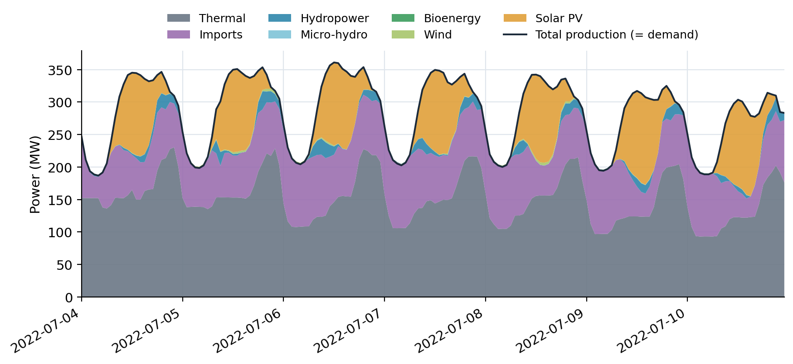
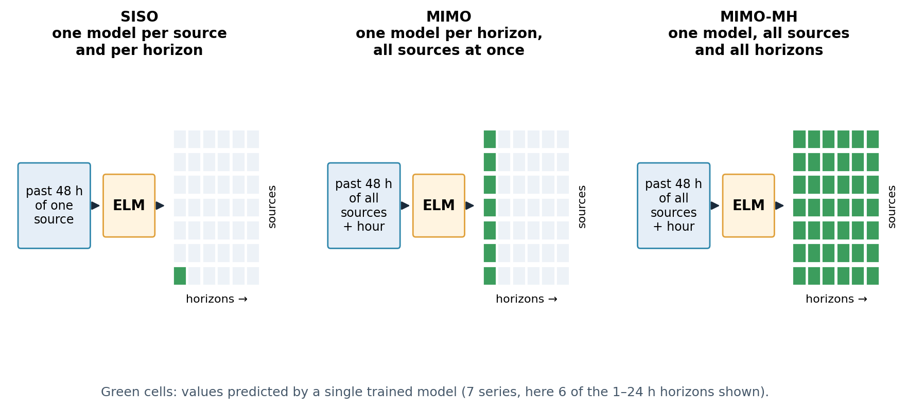

Solar forecasting explained · 22 October 2026 · Published article (MIMO) and manuscript, submission in progress (MIMO-MH) · open code and data
Forecasting every source of an island grid at once: MIMO-ELM
On an island grid, production must match consumption at every moment. The operator needs forecasts of every source and of the total, and they must add up. One model that predicts all of them together can be more coherent, and with an extreme learning machine it trains in seconds.
The question
Corsica's electricity comes from thermal plants, imports through the interconnections, hydropower, solar, wind and bioenergy. The sources are not independent: when solar rises at noon, thermal and imports adjust. Forecasting each source separately ignores these links and gives forecasts whose sum need not equal the forecast total.

Three ways to organise the models
- SISO: one model per source and per horizon, each reading only the history of its own source.
- MIMO (the published article): one model per horizon reads the last 48 hours of all sources, plus the hour of the day, and predicts all of them at once.
- MIMO-MH (the manuscript in submission): a single model predicts all sources for all horizons from 1 to 24 hours, followed by a reconciliation step that makes the forecasts add up.

The theory
No equation links the thermal plants, the imports, hydropower, solar, wind and bioenergy of an island grid: the links are learned from data, with the lightest learner that does the job.
Definitions
- \(\mathbf y_t\in\mathbb R^{m+1}\)
- the total and the \(m\) sources at hour \(t\)
- \(\mathbf x_t\)
- input: the last 48 hours of all signals and the hour of the day
- \(h\)
- horizon, 1 to 24 hours
Three organisations
$$\text{SISO: }\ \hat y^{(j)}_{t+h}=f_{j,h}\!\left(y^{(j)}_{t-47:t}\right),$$ $$\text{MIMO: }\ \hat{\mathbf y}_{t+h}=f_h(\mathbf x_t),$$ $$\text{MIMO-MH: }\ \left[\hat{\mathbf y}_{t+1},\dots,\hat{\mathbf y}_{t+24}\right]=f(\mathbf x_t).$$Extreme learning machine (ELM)
For an input row \(\mathbf x\in\mathbb R^{d}\), a hidden layer of \(L\) neurons with weights \(W\in\mathbb R^{L\times d}\) and biases \(\mathbf b\in\mathbb R^{L}\) drawn at random and never trained:
$$\mathbf h(\mathbf x)=g\!\left(W\mathbf x+\mathbf b\right),$$ $$\hat{\mathbf y}=\mathbf h(\mathbf x)^{\top}\beta .$$Only the output weights \(\beta\) are fitted, in closed form, on the \(N\) training rows stacked in \(H\in\mathbb R^{N\times L}\) and the targets \(Y\):
$$\beta=\left(H^{\top}H+\lambda I\right)^{-1}H^{\top}Y\quad(\text{ridge}),$$ $$\beta=H^{+}Y\quad(\lambda\to0,\ \text{Moore–Penrose pseudo-inverse}).$$Training is one linear solve, so it takes seconds; several outputs share the same \(H\). Stored parameters for one output: \(dL+L+(L+1)\) (input weights, biases, output weights with intercept). ELM: Huang, Zhu and Siew (2006).
In the article's MATLAB code the activation is the ReLU \(g(z)=\max(0,z)\), with 4,096 hidden neurons, a 48-hour window and \(\beta=H^{+}Y\); the MIMO-MH Python pipeline uses ridge with \(\lambda=10^{-6}\).
Reconciliation: forecasts that add up
Write the coherence constraint with the summing matrix \(S=\begin{bmatrix}\mathbf 1^{\top}\\ I_m\end{bmatrix}\): a coherent vector is \(\tilde{\mathbf y}=S\mathbf b\) for some source vector \(\mathbf b\). Weighted least squares (MinT with a diagonal covariance) finds the coherent forecasts closest to the base forecasts \(\hat{\mathbf y}\), trusting reliable forecasts more:
$$\tilde{\mathbf y}=S\left(S^{\top}W^{-1}S\right)^{-1}S^{\top}W^{-1}\hat{\mathbf y},$$ $$W=\operatorname{diag}\!\left(\hat\sigma^2_{\text{total}},\hat\sigma^2_{1},\dots,\hat\sigma^2_{m}\right),$$with the variances estimated on the training residuals, one \(W\) per horizon. By construction the total equals the sum of the sources, and the source with the largest error variance moves most.
Assumptions and validity
Hourly data of one island grid (EDF Corse, 2016–2022); chronological train and test periods; the ELM is compared with persistence, SISO and an LSTM under the same protocol.
Worked example: making forecasts add up
For one hour, suppose the forecasts are 330 MW for the total, 150 for thermal, 90 for imports and 80 for solar, with error variances 36, 25, 49 and 100 MW². The components sum to 320, not 330. Weighted least-squares reconciliation finds the coherent forecasts closest to the original ones, trusting the more reliable forecasts more: thermal 151.2, imports 92.3, solar 84.8 and total 328.3 MW. The gap is closed; solar, the least reliable, moves most. Illustrative values; the formula and its use are in the repository.
Run it
The worked example above, computed with the formula of the theory section (Python 3, NumPy; executed on 22 October 2026). The full pipeline: main in MATLAB for MIMO-ELM, cd mimo_mh && python main.py for SISO, MIMO, MIMO-MH and reconciliation (mimo_mh/reconciliation.py).
import numpy as np
y_hat = np.array([330.0, 150.0, 90.0, 80.0]) # total, thermal, imports, solar (MW)
W = np.diag([36.0, 25.0, 49.0, 100.0]) # error variances (MW^2)
S = np.vstack([np.ones(3), np.eye(3)]) # total = sum of the three sources
Wi = np.linalg.inv(W)
y_tilde = S @ np.linalg.solve(S.T @ Wi @ S, S.T @ Wi @ y_hat)
print(y_tilde.round(1))Output:
[328.3 151.2 92.3 84.8]Results of the published article
From its abstract: one hour ahead, solar and thermal production are forecast with nRMSE 0.179 and 0.051 and R² above 0.98; total demand stays reliable up to five hours ahead; wind and bioenergy remain hard; MIMO-ELM improves on persistence and on an LSTM tuned with a realistic budget, with small but stable gains over SISO. The MIMO-MH results will be reported with its article.
Code and data
One repository gathers the MATLAB code of the article (MIMO-ELM, SISO and LSTM comparisons), the Python pipeline of MIMO-MH with reconciliation (written by Yoan Jheelan), and the hourly EDF Corse data 2016–2022, released under the Licence Ouverte.
main % MATLAB: MIMO-ELM with the settings of the article
cd mimo_mh && python main.py % Python: SISO, MIMO, MIMO-MH, reconciliationMATLAB and Python code, dataArchived code: doi:10.5281/zenodo.23562559Related: ELM benchmark for PV
Links
| Article | C. Voyant, M. Despotovic, L. Garcia-Gutierrez, M. Asloune, Y.-M. Saint-Drenan, J.-L. Duchaud, G. A. Faggianelli, E. Magliaro, Short-term forecasting of energy production and consumption using extreme learning machine: A comprehensive MIMO based ELM approach, Applied Energy 410, 127599, 2026, doi:10.1016/j.apenergy.2026.127599 · MIMO-MH: manuscript, submission in progress |
|---|---|
| Code | github.com/cyrilvoyant/Data_Viz_2024 |
| Archive (all versions) | doi:10.5281/zenodo.23562559 (Zenodo) |
| Software Heritage | permanent archive of the repository |
| Data | EDF en Corse open data, Licence Ouverte |
| The story, for everyone | Seven signals, one ELM |
| The approach | Concentric modelling: understand before you compute |
| Author | Cyril Voyant (Mines Paris – PSL, O.I.E.) · ORCID · www.cyrilvoyant.com |
Authors and source
Published article: Cyril Voyant, Milan Despotovic, Luis Garcia-Gutierrez, Mohammed Asloune, Yves-Marie Saint-Drenan, Jean-Laurent Duchaud, Ghjuvan Antone Faggianelli, Elena Magliaro. Short-term forecasting of energy production and consumption using extreme learning machine: A comprehensive MIMO based ELM approach. Applied Energy 410 (2026) 127599.
Manuscript, submission in progress: Elena Magliaro, Cyril Voyant, Yoan Jheelan, Andrea Michiorri, Alan Julien, Yehia Eissa, Jamie Bright. Energy-consistent multi-input multi-output multi-horizon extreme learning machines with embedded reconciliation for multi-source power forecasting.
Data: EDF en Corse open data, Licence Ouverte. Cyril Voyant wrote this page; the methods belong to the full author teams.